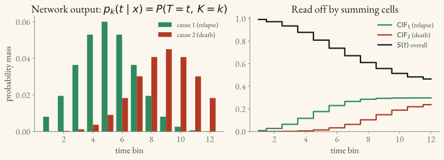

DeepHit Loss
DeepHit (Lee et al., 2018) is a deep-learning survival model that does not require the proportional-hazards assumption of Cox (2.1) or a named parametric event-time distribution (2.2). Instead, it predicts a discrete probability table and handles competing risks (1.4) natively. Its loss combines a likelihood term that rewards probabilistic accuracy with a ranking term that rewards discrimination. It is flexible, but not assumption-free: time discretization, network architecture, and censoring assumptions still matter.
Model output
Cox and parametric models predict a summary (a risk score, or a distribution’s parameters) and reconstruct the survival curve afterward. DeepHit skips the middle-man: the network outputs the full joint probability mass over which event happens and when.
Time is first chopped into bins t \in \{1, \dots, T_\max\} (the same discretization as the discrete-time NLL models in 2.2), and for each patient the network emits one probability per (event type, time bin) cell:
\underbrace{p_k(t \mid x)}_{\text{prob. that event } k \text{ strikes in bin } t} \;=\; P(T = t,\; K = k \mid x)
- t — a discrete time bin.
- k \in \{1, \dots, K\} — the event type (cause), e.g. k=1 relapse, k=2 death. With a single event type, K = 1.
- All cells sum to at most 1; the leftover mass is the probability of never experiencing any event within the observed horizon.
Two quantities are read off this table by summing cells — no extra model needed:
\underbrace{F_k(t \mid x)}_{\text{CIF for cause } k} = \sum_{\tau \le t} p_k(\tau \mid x), \qquad \underbrace{S(t \mid x)}_{\text{event-free survival}} = 1 - \sum_{k=1}^{K}\sum_{\tau \le t} p_k(\tau \mid x)
F_k is the cumulative incidence function — the probability of having had cause k by time t, the competing-risks quantity defined in 1.4. S is the probability of escaping all causes through t.
Worked example — one patient’s table. With two causes (relapse, death) and monthly bins, the network might place 0.04 on (relapse, month 6) and 0.01 on (death, month 6). Then the relapse CIF F_1(6) is the sum of all relapse cells up to month 6, and S(6) is 1 minus every cell (both causes) up to month 6.

From data to loss
DeepHit is trained by minimizing a weighted sum of two losses. Using separate non-negative weights avoids ambiguity across implementations:
\underbrace{L}_{\text{total}} \;=\; a\, \underbrace{L_{\text{likelihood}}}_{\text{probabilistic accuracy}} \;+\; b\, \underbrace{L_{\text{rank}}}_{\text{discrimination}}
The ratio a:b controls the trade-off. The pycox API later uses a parameter named alpha, but defines it specifically as a=\alpha and b=1-\alpha.
Term 1 — the likelihood loss (probabilistic accuracy)
This is the same negative-log-likelihood recipe as 2.2 — product of per-subject likelihoods, log, negate — with one change: an observed event contributes the probability mass of its specific (time, cause) cell instead of a density, because time is now discrete.
L_{\text{likelihood}} \;=\; -\sum_i \Big[\, \underbrace{\delta_i \,\log p_{k_i}(T_i \mid x_i)}_{\text{event of type } k_i \text{ in bin } T_i} \;+\; \underbrace{(1-\delta_i)\,\log S(T_i \mid x_i)}_{\text{censored: survived past } T_i} \,\Big]
where \delta_i is the event indicator (1 = event seen, 0 = censored) and k_i is subject i’s event type. The switch is identical to 2.2: a patient who had the event is scored by the cell they landed in; a censored patient is scored by the probability of having survived as long as they did.
Term 2 — the ranking loss (discrimination)
The likelihood term rewards accurate probabilities but does not guarantee calibration in finite data or directly emphasize the ordering of patients—which is what the C-index measures. The ranking term adds that pressure with a smooth, differentiable penalty over comparable pairs.
A pair (i, j) is comparable for cause k when patient i actually had event k at time T_i while patient j was still event-free at that moment (T_j > T_i). For such a pair, the patient who failed should have the higher predicted incidence at T_i: F_k(T_i \mid x_i) > F_k(T_i \mid x_j). The loss penalizes violations:
L_{\text{rank}} \;=\; \sum_{k=1}^{K}\;\sum_{(i,j)\,\in\,\mathcal{A}_k}\; \underbrace{\exp\!\left(-\frac{F_k(T_i \mid x_i) - F_k(T_i \mid x_j)}{\sigma}\right)}_{\text{small when } i \text{ correctly ranked above } j;\ \text{large when not}}
- \mathcal{A}_k = \{(i,j) : \delta_i = 1,\; k_i = k,\; T_j > T_i\} — the acceptable (comparable) pairs for cause k.
- \sigma (sigma) — a scale controlling how sharply the penalty reacts to the CIF gap. Smaller \sigma → steeper penalty for mis-ordered pairs.
- Because we minimize L_{\text{rank}}, the exponential drives the gap F_k(T_i \mid x_i) - F_k(T_i \mid x_j) to be large and positive — exactly the concordant ordering the C-index rewards.
Worked example — one ranking pair. Patient A relapses at month 6; patient B is still relapse-free at month 6 (so T_B > 6). This is a comparable pair for the relapse cause. DeepHit wants F_1(6 \mid x_A) > F_1(6 \mid x_B) — A’s predicted relapse incidence at month 6 above B’s. If the model instead predicts B as the higher-risk one, the gap goes negative and the \exp(\cdot) penalty blows up, pushing the network to fix the ordering.
Combined
L \;=\; a\,L_{\text{likelihood}} \;+\; b\,L_{\text{rank}}
For the pycox convention, this becomes L=\alpha L_{\text{likelihood}}+(1-\alpha)L_{\text{rank}}.
Probabilistic accuracy and discrimination can pull in different directions. Select their relative weights using validation data and metrics that match the intended clinical output.
Pros and cons
✅ No PH assumption — effects can flip or fade over time (the surgery case that breaks Cox, 2.1). |
❌ Needs time binning — you must discretize the time axis; bin count is a tuning choice, and predictions live only on that grid. |
✅ No distributional assumption — the PMF takes any shape the data supports, unlike the fixed families in 2.2. |
❌ No extrapolation beyond the last bin — unlike a parametric NLL, the curve simply stops. |
✅ Competing risks are native — one head per cause, cause-specific CIFs (1.4). |
❌ Two hyperparameters (\alpha, \sigma) to tune, plus the bin grid — more knobs than Cox. |
| ✅ Targets probability quality and ranking in one objective. | ❌ Data-hungry — predicting a full PMF can require more events than fitting a small coefficient model. |
Key takeaways for applied ML scientists
If you just need to train and use DeepHit — not derive it — these are the points that matter:
- Reach for it when competing risks are in play. Multiple mutually exclusive event types (relapse vs. death) with cause-specific predictions is DeepHit’s home turf; for a single event, Cox or a discrete-time NLL is usually simpler. See
1.4. - It outputs full probabilities — per-cause CIFs F_k(t) and event-free S(t) — not just a ranking. Evaluate discrimination, Brier prediction error, and calibration separately.
alpha,sigma, and the time grid need validation. Inpycox,alphaweights the NLL and1-alphaweights ranking;sigmasets how sharply mis-ordered pairs are penalized. More bins give finer nominal resolution but also sparser supervision.- Don’t trust it past the last time bin. DeepHit can’t extrapolate; if you need predictions beyond follow-up, use a parametric model (
2.2) or DSM. - Censoring is handled by the likelihood term (the S(T_i) part) — pass
(times, events)and, for competing risks, the event-type labels.
For how DeepHit stacks up against Cox, NLL, and DSM, see 2.5.
Implementation
pycox is the reference implementation — DeepHitSingle for one event, DeepHit for competing risks (see 04_packages/4.1_pycox.md). Like all discrete-time models it needs a label transform to bin the time axis:
from pycox.models import DeepHitSingle
labtrans = DeepHitSingle.label_transform(num_durations=20)
y_train = labtrans.fit_transform(durations, events)
model = DeepHitSingle(net, optimizer,
alpha=0.2, sigma=0.1, # pycox: alpha*NLL + (1-alpha)*rank
duration_index=labtrans.cuts)
model.fit(x_train, y_train, epochs=100)
surv = model.predict_surv_df(x_test) # full S(t) per subjectFor competing risks, swap in pycox.models.DeepHit and provide event-type labels k \in \{1, \dots, K\}.
auton-survival offers an alternative deep competing-risks model, Deep Survival Machines (DSM), which mixes parametric distributions instead of a discrete grid (see 04_packages/4.5_auton_survival.md):
from auton_survival.models.dsm import DeepSurvivalMachines
model = DeepSurvivalMachines(layers=[100]).fit(features, outcomes.time, outcomes.event)Implementation convention. In
pycox,alphais restricted to [0,1] and weights the likelihood term:alpha * NLL + (1 - alpha) * rank. Other papers or implementations may name the weights differently, so verify the local definition before interpreting a tuning result.